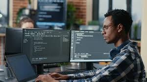

Ainsi, le métier de développeur logiciel (code ROME M1805) consiste à concevoir des logiciels, souvent à la demande d'un client. Le travail débute sur la base d'un cahier des charges présenté par un prestataire. Pour n'importe quel logiciel, la phase de préparation et de mise en place est la plus importante.
|  |